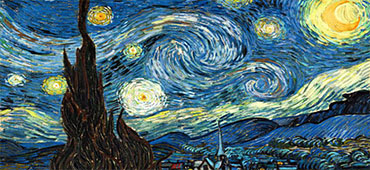
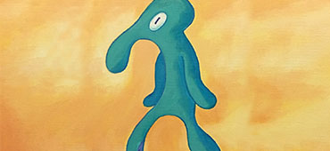

- Todas
- Permanentes
- Por tiempo limitado
- Ultimos añadidos

La Noche Estrellada
La noche estrellada es la obra maestra del pintor postimpresionista Vincent Van Gogh.
Ver más
Perrito Bonito al Óleo
Obra de autor desconocido muestra una expresión sensible y plasma claramente la intención del artista.
Ver más

Fuerte Hermosura
La obra más aclamada y a la vez más criticada del autor, creó opiniones divididas desde su muestra al público en 2002.
Ver más
El Ángel Caído
Estudio anatómico del mismísimo Lucifer, que fue durante un tiempo la mano derecha de Dios. Un día tuvo la idea de rebelarse.
Ver más
La Persistencia de la Memoria
La persistencia de la memoria, conocido también como Los relojes blandos o Los relojes derretidos es un cuadro del pintor español Salvador Dalí.
Ver más